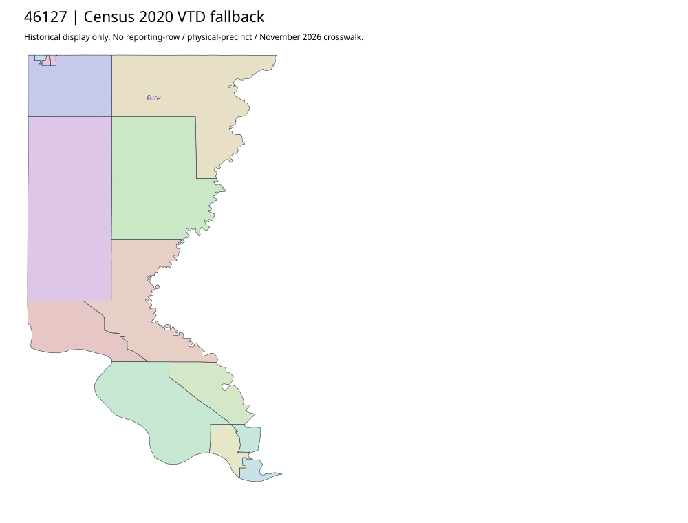

304 ordered indexUnion | 46127
Official auditor parent links a complete Precincts and Locations2023 DOCX. It is a roster, not acquired precinct geometry. A separately followed county election link returned404 and remains. County/precinct names in the roster are not approved joins; Census2020 fallback retained.
9 priority / 12 full historical observations. Parent is a summary ancestor, not additive to leaves. No physical feature matches or current reporting crosswalk approved.
Acquired shared-parent assets
No complete county precinct-map original acquired from this bounded chain. Use qualified fallback; roster/landing/error bodies are retained as evidence.
Administrative/district supplement (not a precinct polygon match): map-46127-020-network
Census2020 fallback
17 native historical VTD features. Entire785-feature ZIP original retained once, all66 counties. Yankton has one countywide VTD. No current/reporting allocation. complete original gzip

Full binary/attribute/geometry QA
Observed authority/acquisition routes
Complete SOS authority fields including original blank/masked values: parent inventory. No contacts were sent.
Ordered full children
- Precinct-12 | 1299 source votes | priority
- Precinct-03 | 1207 source votes | priority
- Precinct-11 | 910 source votes | priority
- Precinct-06 | 866 source votes | priority
- Precinct-09 | 854 source votes | priority
- Precinct-10 | 738 source votes | priority
- Precinct-05 | 658 source votes | priority
- Precinct-04 | 556 source votes | priority
- Precinct-08 | 476 source votes | priority
- Precinct-01 | 455 source votes | remainder
- Precinct-02 | 402 source votes | remainder
- Precinct-07 | 353 source votes | remainder